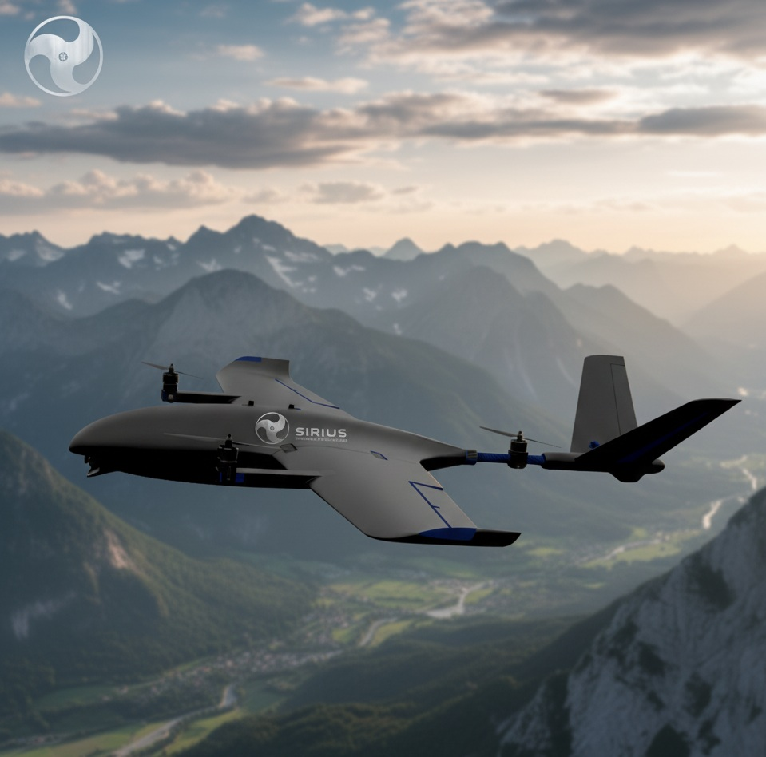
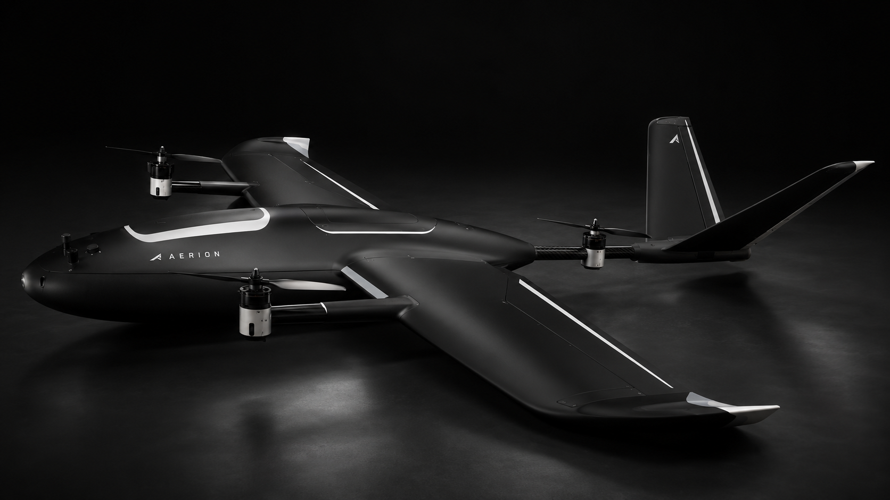

Mapeamento e fotogrametria
Coleta aérea para levantamentos, acompanhamento de áreas e geração de produtos cartográficos.

Chegue onde a missão exige.
Sem depender de pista.
Uma plataforma aérea modular que combina decolagem e pouso vertical com a eficiência de voo de uma asa fixa — criada para levar sensores, visão e dados a operações de campo.
O AERION elimina a necessidade de pista para decolagem e pouso e realiza a transição para o voo horizontal de forma controlada. Isso permite iniciar operações em áreas compactas e aproveitar a eficiência aerodinâmica da asa fixa durante o percurso.
Sua arquitetura aberta facilita a integração de sensores e a adaptação da aeronave ao objetivo de cada missão — da captura de imagens à coleta de dados especializados.
Coleta aérea para levantamentos, acompanhamento de áreas e geração de produtos cartográficos.
Acesso visual a ativos e trajetos extensos, reduzindo deslocamentos e exposição de equipes em campo.
Observação recorrente de áreas naturais, rurais ou de difícil acesso com cargas úteis compatíveis.
Consciência situacional em áreas amplas com vídeo digital estabilizado e operação planejada.
Levantamento de informação visual para apoiar decisões, vistorias e planejamento operacional.
Arquitetura aberta para integração experimental, aquisição de dados e desenvolvimento tecnológico.

Decole e pouse verticalmente em locais onde uma operação convencional de asa fixa seria limitada pela falta de pista.
Após a transição, o voo sustentado pelas asas favorece missões que exigem cobertura de área e permanência em cruzeiro.
Nariz modular e comunicação via MAVLink criam uma base versátil para câmeras, sensores e futuras configurações.
O sistema de vídeo digital estabilizado apoia observação, orientação do operador e registro visual da missão.
Consulte arquitetura, configuração de referência, materiais, aviônicos e estimativas preliminares de desempenho no portfólio técnico do AERION.
Baixar portfólio técnico — PDF ↓ Documento técnico preliminar — Rev. 1.0, julho de 2026. Valores de desempenho dependem de validação por ensaios e não constituem certificação aeronáutica.